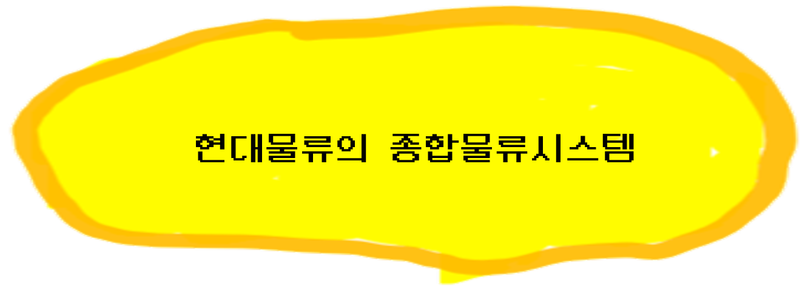

세븐일레븐은 우리가 잘 알 듯 24시 편의점이다.
현 일본의 최대 유통망이 보유하고 있다. 1990년대에 기업의 판매에 있어서 최대관점인 재고관리를 중점으로 한 성공적이 기업혁신을 이루었다.
세븐일레븐의 환경변화 대응정책으로 선택한 '재고관리'의 관점은 오늘날 MIS가 구축되는 가장 많은 실례이며, MIS의 조상격인 ERP와 함께 가장 기본적 모습이다.
회사내역-
이토 요카도사는 일본에서 수익을 가장 크게 내는 유통업체이다.
1974년 이토 요카도는 미국 텍사스주 휴스턴의 사우트랜드사로부터 일본의 세븐일레븐 프랜차이즈 운영권을 매입하였다.
첫 점포는 1974년 5월 개점을 해서, 그로부터 20년 후 세븐일레븐 재팬 프랜차이즈는 5,000여개의 점포를 갖춘 유통기업으로 성장했다.
반면, 세븐일레븐 모기업인 사우트랜드사도 또한 사업확장을 해 나갔으나, 큰 부채부담으로 결국 법정관리 상태를 면치 못하게 되었다.
이 회사에서는 현금증대를 위해 자산을 매각할 수 밖에 없었고 1990년에는 이토 요카도사가 사우트랜드사 주식의 70%를 매입했다.
미국의 세븐일레븐이 상당액수의 자금손실을 보는 동안, 일본의 세븐일레븐에서는 매출의 40%에 달하는 영업이익을 보게 되었다.
(1992년 기준으로 14.4억달러 매출에서 6.8억달러의 이익). 이것은 정보기술에 기반을 둔 고객지향적 전략으로 한 발 앞서 기업혁신을 일구어 낸 것에 기인한다고 할 수 있다.
정보시스템 구축내용 및 적용결과-
세븐일레븐 재팬은 일본내의 점포들을 위해 2억달러를 들여 정보시스템을 구축했다.
이 시스템의 목적은 '고객이 누구이고 그들의 욕구가 무엇인지 파악'하며 '고도의 제품추적시스템을 개발하는 것'이었다.
매 점포의 점원들은 구매가 이루어질 때마다 성별과 나이와 같은 고객정보를 입력한다.
따라서 회사에서는 누가 무엇을 어디에서 하루중 언제 구매하는지 알 수 있으므로 고객취향을 분석,파악하는 것이 가능한 것이다.
점원 역시 고객이 찾지만 점포 재고에는 없는 제품들에 대한 정보를 입력한다.
이러한 정보를 이용하여 일본의 특수회사에서나 제조하는 제품들까지도 재고를 갖추게 되며 점포마다 고객취향에 맞게 제품구색을 갖추는 것이 가능해 졌다.

현대물류의 종합물류시스템
국내 물류 업체 중에서는 현대물류가 정보화와 자동화 부문에서 국내 최고임을 자랑한다. 업계 후발 주자로
출발했지만 선진 물류시스템 마련을 위해 연구와 투자를 아끼지 않은 결과다. 현대 물류의 부곡 터미널은
국내 최초의 무인 시스템 택배 화물전용 터미널로 업계 관계자들이나 해외 업체 사이에 견학장으로 각광받는
선진국 수준의 물류산업 전진기지, 레이지 바코드 인식기를 이용, 화물을 자동 분류함으로써 시간당 5천박스
까지 처리할 수 있는 생산성 향상을 달성했다. 여기에 '하이덱스'라는 택배종합 전산시스템이 현대물류의
정보화를 이끈다. 전국 150여개 영업소와 본사의 주 컴퓨터를 연결한 하이덱스는 화물의 자동 입출고, 컴
퓨터와 연결하고 이 정보에 따라 화무터미널에선 자동으로 화물을 분류, 전국 어디든 하루만에 화물이 도
착할 수 있는 시스템을 갖춰 연간 36억원의 물류비 절감 효과를 거두고 있는 것이다. 현대물류의 이 같은
물류 자동화 시스템은 물류 선진국이라는 일본의 것을 능가하는 수주으로 화물자동분류시스템과 택배종
합시스템, 화물 추적시스템을 결합한 종합물류시스템, 이러한 첨단 시스템의 운영으로 현대물류는 정시도착
정시 배송이란 택배업계의 지상 과제를 해결함은 물론, 원활한 물류 흐름을 꾀해 물류비용 절감과 경쟁력 강
화에 큰 몫을 해내고 있다.
보다 빠르고 정확하고 완벽하게 상품을 생산자로부터 소비자네세 또는 화물을 이곳에서 저곳으로 전달하는
물류산업은 21세기를 선도할 유망산업으로 각광받는 분야인 것은 대부분 알고 있을 것이다. 특히 문전서비스
로 날이 갈수록 성장을 거듭해 가는 택배사업은 21세게 물류상업의 꽃으로 불릴 정도라고 들었다. 그러나 우리
나라는 생산부분에 비해 물류산업은 상대적 낙후를 면치 못하는 사실은 분명한 점이다. 화물의 취급방법이나
운송방법, 운송체계 등 각 부분에 있어서 아직도 비효율적인 상태에서 벗어나지 못하고 있다. 그러나 물류
환경은 너무나도 빠르게 변해가고 있다는 점도 주의해야 한다. 고도의 산업화로 물적 유통량은 엄청나게
늘어나고 있고 그러면서 화물의 취급방법이나 운송방법, 운송체계의 일대 혁신을 요구하고 있다는 사실을
잊지 않아야 한다. 후발업체인 현대물류가 단기간 안에 택배 자동화와 정보화를 이루어낼 수 있었던 것은
다른 업체에서도 자동화 시스템 개발을 구상했지만 현대는 그보다 더 큰 추친력과 자신감으로 보다 먼저
사전조사 및 재검토한 끝에 시스템 확정까지 발 빠르게 앞서나간 매우 옳은 당돌함이었던 것 같다.